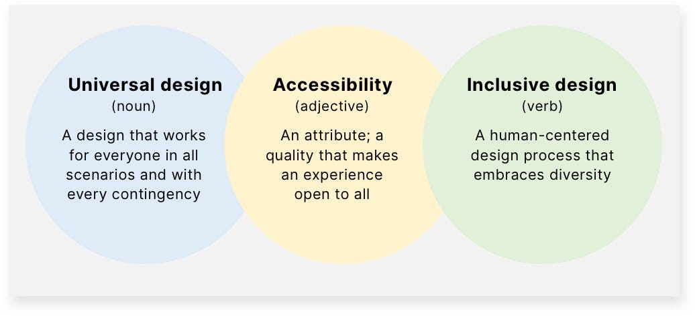

Why Universal Design Matters
Universal design in the digital realm is about creating web environments that are accessible, usable, and inclusive for all people, regardless of their abilities or disabilities.

The Importance of Accessibility
Accessibility in web design is not just a trend; it's a fundamental aspect that ensures everyone can engage with content without barriers. It's about providing equal access and opportunities to people with diverse abilities, thus fostering an inclusive digital society.
Benefits for All Users
Universal design benefits everyone, not just those with disabilities. Features like clear navigation, readable fonts, and responsive design enhance the overall user experience, making web content more enjoyable and efficient for all users. I've noticed sometimes a simple design is better to target an audience rather than a bunch of information at once as shown below
Responsibility as Developers and Designers
As creators of the digital world, developers and designers hold the responsibility to ensure the web remains open, accessible, and inclusive. Embracing universal design is a step towards ethical and socially responsible web development.
Shaping the Future of the Web
The future of the web is inclusive. By integrating universal design principles, we are paving the way for a web that accommodates everyone, regardless of their individual needs and preferences. It's about building a web for the future, for everyone.